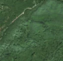
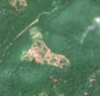

25,6 ha de pădure schimbată lângă Brădețelu
Între vara lui 2025 și 27 aprilie 2026, pe aproximativ 25,6 ha de pădure din comuna Ibănești, lângă Brădețelu, județul Mureș, imaginile Sentinel-2 arată că vegetația a dispărut sau s-a schimbat puternic. În registrul public există o autorizație de tăiere pentru acest loc.
Autorizația de tăiere
cu autorizație
Parcela autorizată acoperă zona, iar autorizația era valabilă când s-a tăiat.
Ce se vede în poze: În poza detaliată și în «înainte» zona marcată era acoperită de pădure deasă, iar în «după» apare o pată mare de pământ gol și resturi de lemn, cu margini clare, în mijlocul pădurii verzi. Asta arată că arborii au fost doborâți sau tăiați pe o suprafață mare.


Înainte și după: Copernicus Sentinel-2, 10 m pe pixel, conturul zonei cu portocaliu. Poza detaliată (Esri World Imagery) e de acum 1–4 ani: arată ce era acolo înainte, nu tăierea.
Pe scurt
- Identificator
- 20260427_46760_25101
- Locul
- Brădețelu, comuna Ibănești, județul Mureș (SIRUTA 117550)
- Coordonate (centru)
- 46.75952, 25.10070 · Google Maps · OpenStreetMap
- Suprafața
- 25,6 ha (din pixeli de 10 m; ± câțiva pixeli pe margine)
- Pădurea întreagă
- în vara lui 2025 (de atunci, nori sau iarnă)
- Prima imagine cu schimbarea
- 27 aprilie 2026
- Imagini în care se vede schimbarea
- 5
- Cât de sigur e semnalul din satelit
- medie
- Autorizația cea mai apropiată
- APV 2500166201410 · Ocolul Silvic Fâncel, valabilă 15 octombrie 2025 – 30 noiembrie 2025, la 0 m de zonă
- Terenul
- pădure de stat, după amenajamentul silvic publicat
- Arie protejată
- Călimani - Gurghiu
- Pădure pierdută în jur, alți ani
- 2008, 2009, 2013, 2014 (Hansen)
- Garda Forestieră
- Brașov
Dacă vrei să verifici sau să sesizezi
- Pădurile din județul Mureș sunt în grija Gărzii Forestiere Brașov, care controlează tăierile și dă amenzile.
- Autorizația găsită în zonă e emisă de Ocolul Silvic Fâncel.
- Formularul Gărzii Forestiere Naționale primește sesizări și fără nume. Trimite linkul acestei pagini, coordonatele și pozele. Dacă tăierea e în desfășurare, sună la 112.
- Autorizațiile și transporturile de lemn se pot căuta în Inspectorul Pădurii.
Pagina arată ce se vede din satelit și ce scrie în registrul public; nu e o dovadă în sine.
Cum citezi zona
Linkul acestei pagini nu se schimbă. Dacă zona iese vreodată de pe hartă, pagina rămâne, cu data și cu ce știam despre ea.
Pădurea RO, zona 20260427_46760_25101: 25,6 ha, Brădețelu, comuna Ibănești, județul Mureș; schimbare văzută din satelit între vara lui 2025 și 27 aprilie 2026. https://iliemihai.github.io/padurea-ro/zona/20260427_46760_25101/ (consultat la [data]). Date: CC BY 4.0.
Datele zonei: GeoJSON · toate zonele: date deschise · licența CC BY 4.0.
Istoricul zonei pe hartă
Starea se poate schimba când registrul publică o autorizație sau când analistul vede poze mai bune. O ținem aici, ca un link citat să arate și ce spuneam atunci.
Pe hartă cel târziu din 5 noiembrie 2026.
- 5 noiembrie 2026 – azi · cu autorizație
Detalii tehnice, pentru verificare
De ce acest nivel de încredere:
- văzută schimbată în 5 imagini diferite
- peste 3 ha
- ultima dată am văzut-o intactă în vara lui 2025 (de atunci, nori sau zăpadă)
- AI-ul vede pădure dispărută
Ce a văzut analistul cu context: În Sentinel-2 «după» (iunie 2026) apare o pată roz-brună neregulată, cu margini ascuțite, în pădure care rămâne verde; în vederea largă se văd și alte petice mici și urme (probabil drumuri de colectare și rampe) răsfirate prin pădure. Nu are formă de bandă care continuă în afara conturului, nu e negru ca la foc, iar sezonul (vară) exclude culorile de toamnă; coronamentul din 2000 de 94% și WorldCover 100% arbori susțin pădurea închisă. Registrul de autorizații indică suprapunere 0% (neacoperit), dar asta nu distinge între tăiere și doborâturi de vânt, iar zona e în aria protejată Călimani - Gurghiu.
- Placa Sentinel-2
- 35TLM
- NDVI de referință
- 0.88
- NBR de referință
- 0.65
- Scăderea în pădurea din jur
- 0.05
- Persistență
- 1.0
- NDVI / NBR după
- 0.499 / 0.144
- Analistul de zi (model)
- taiere · 0.9 · claude-haiku-5-5
- Analistul cu context (model)
- taiere_rasa · 0.8
Cum se calculează fiecare: metodologia.
Pune harta zonei într-un articol
Copiază codul în articol (merge în majoritatea site-urilor de știri). Sau pune doar linkul: WhatsApp, Facebook și X arată singure poza zonei.